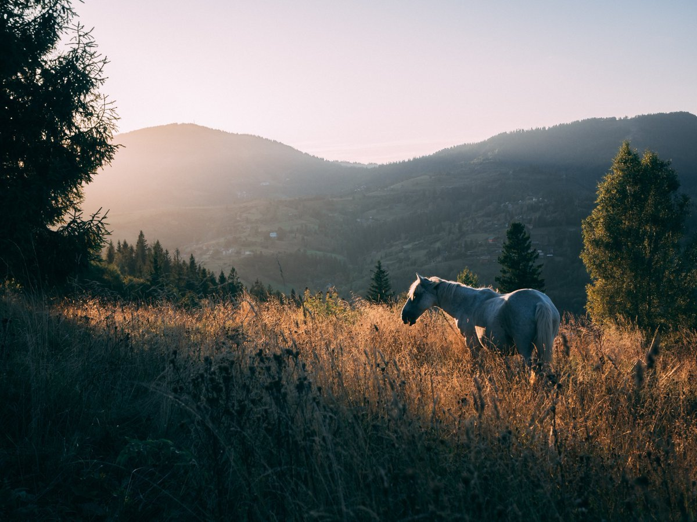

Мен Токтосунова Уркуя Сражидиновна 2003-жылы 28-майда Ноокат районунда торолгом.Мен кичинемден ыйлак чонойгом.Болбогон нерселерге дагы ыйлай берчуу адатым бар эле.Азыр эстесем кулкум келет.6 жашыма чейин Бишкекте чонойгом.Арасында таенемдердикинде да чонойдум.Дээрлик тарбияны мага таенем берген.Азыр таенеми эстегенде жылмайып,козумо жаш келет.Ал аял мен учун башкача,апамдан кээ бирки албаган тарбияны таенемден алгам.Кечке маал таенем экообуз китеп окуп жатчуубуз.Жаман сапаттарды окуп калсак "Кордунбу андай болбош керек"-деп эскертип калчу.7 жашымдан мектепке бардым.Класста эн жакшы окуган мен болчуумун.Бирок озумдун айылдагы мектептен 8-класста башка мектепке которулуп ктекем.Ал мектепте биринчи жолу 3 алгам.Ошондо менин ыйлаганымы айтсанар.Уйго кантип барам деп биринчи ошону ойлогом.Азыр ойлоп корсом мектепте атам менен апам мени менен сыймыктанып журсун деп эле окуган экем.Бирок мен мектепте окуп жургондо кыргыз тилине аябай кызыкчуумун.Ошентип,2021-жылы мектепти аяктагам.Азыр Ош Технологиялык университетинде 2-курста окуйм.Дагы кошумча Motion-web IT академиясында окуп атам.Бул курс менин максатымда бар болчу.Бирок кайсы компания экенин билбейт элем,ушул академия буюрган экен.Уй-булоодо 6 бир тууганбыз 3-су мен.4кыз 2уул.Кичинекейлерибиз уул.Эн кичинебизге менин мээримим башкача.Кээде 2 жумада бир барсам сагынып калат.Кетпейле эле койчу деп кучактаганда уйдо эле журо бергим келет.Дагы мен апама караганда атама жакыныраакмын.Атам менен кундуго суйлошуп турам.Атам мени баардыгынан караганда жакшы тушунгондой болот.Атамын мээрими мага толук жетеби билбейм,ошого дагы болсо керек балдар менен суйлошо бербейм.Кыз балага атасынын же агасынын мээрими толук жетсе башка балдардан мээрим издебейт.Кызыккан сабагым адабият.Бош убактарымда китеп окуйм,топ ойнойм.Топту кыйладан бери ойной элекмин.Акыркы жолу Россияда эжемдер менен ойногом.2 эжем тен Россияда.Кичине эжем жакында келет.Чон эжемдин уй-булоосу бар анан менин плимянигим бар(Юсуф).Ушул курсумду бутуп жакшы ишке кирип алсам.Уйдогулорго жардам берсем дейм.Атам менен апам кийинки жылы Аажыга барабыз деп ниет кылып атышат.Ошого кичине болсо дагы салымым кошулса дейм.Менин кунумдук жашоом:эрте менен азыр 6да туруп намаз багымдат окуйм,потом окууга даярданам,чай ичип алып окууга барам.Негизи группалаштарым жакшы адамдар бирок мен анча суйлошкум келе бербейт.Мурун эч кимисинен уялбайт элем.Азыр болсо баарынан уялам.ТОА.Окуудан чыгып курска барам,курс жок кундорум уйго келип сабак карайм.Курска катышып атканан бери сабак карай турган болуп атам.Бош убактым анча деле болбойт.Чынын айтсам кыйладан бери китеп окуй элекмин.Курска барганга чейин намаз окуп алам.Пешим.Аср.Курс убагында шам отуп кетет.Уйго келип шам куптан окуйм.Жатаар алдында музыка угам же кино кором.Келиме айтып жатканга аракет кылам.Бирок кээде унутуп калам.Ошол.Негизи озум бюджетте окуйм стипендия алам,бирок ушул рейтингде тушот окшойм.Россиядан кеч келип калды.Жакшы коргон тамагым лагман,жакшы коргон жаныбарым ат,хоббим китеп окуу,волейбол ойноо,жакшы коргон музыкам коп эле музыка жагат.Жакшы коргон китебим Зуура Сооронбаева "Астра гулу",Касымалы Жантошов "Каныбек",Халит Эртугурул "Сонку дем",Рустам Абилов "Каректен аккан коз жаш" дагы коп эле китептер жагат.Адабиятка жакынмын.Жакшы коргон кином коп.М:К2 телеохранитель,Хиллер,Болтун.Жакшы коргон гулум ромашка,роза гулдордун баары эле жагат.Айрыкча талаа гулдору.Озум да уйдо гул остуром.Колумдан келбеген иштер:тамак кылганды анча билейм,от жакканды,мал караганды,коп эле иштерди кылганды билбейм азыр ойлонуп таппай калдым.Адамдан эн баалаган сапатым:адамгерчилууктулук.А балдардан издеген сапат намысчыл,адалдык главный мени.......Негизи мага кандай адам жагышын анча деле биле бербейм. Олимпиадаларга коп эле катшыкам мектеп учурунда коп эле олимпиадаларга барып журдум 2-3-орундарды алат элем.Кобунчо валейболдон граммотам коп.1-курсумда Жалал-Абадга университеттер аралык олимпиадага барып кыргыз-тилден 1-орунду алгам.Анда 8 университет катышкан.Ошол бир эле дипломум бар.